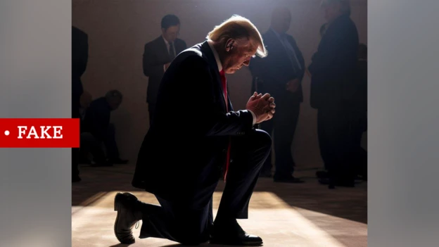
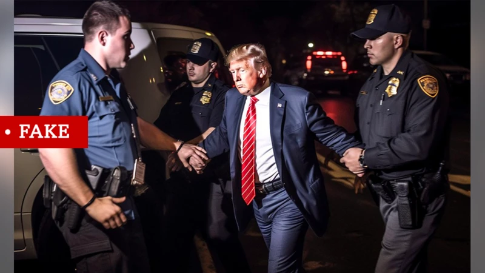
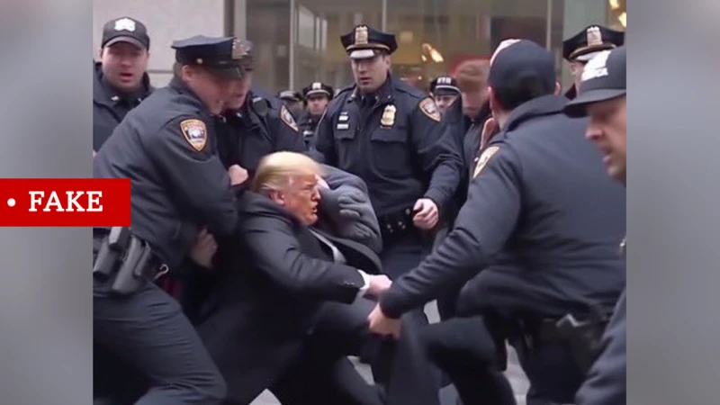

otras noticias
- Cómo un viaje a Noruega me hizo ver que estaba equivocado y que la Tierra no es plana
- Las imágenes falsas creadas con IA para intentar atraer el apoyo de los votantes negros hacia Trump
- La princesa Kate pide disculpas por la "confusión" que causó su foto retirada por las agencias de noticias por inconsistencias
- “Me arrepiento de haber publicado en línea que yo era Madeleine McCann”
- El Yimeilun, la estrategia con la que China busca influir en las elecciones de Taiwán al sembrar dudas sobre su alianza con EE.UU.
- Las afirmaciones falsas y engañosas amplificadas por Elon Musk en Twitter
- Los sobrevivientes de ataques terroristas que son acusados de fingir por teóricos de la conspiración
- Quiénes son los "Ciudadanos del Reich", el grupo asociado con los golpistas arrestados en Alemania
Donald Trump: cómo detectar imágenes creadas por inteligencia artificial como las fotos falsas del arresto del expresidente
Todas las imágenes publicadas en este artículo son falsas.
Imágenes falsas creadas por herramientas de inteligencia artificial (IA) que retratan a Donald Trump han aparecido en redes sociales durante la última semana.
Muchos mostraron falsamente el arresto del expresidente, quien ha dicho que puede enfrentar en los próximos días una acusación por parte de la justicia por el supuesto pago de dinero a una mujer con la que tuvo una relación.
Al momento, el exmandatario no ha sido acusado de ningún delito.
Muchos de los que compartieron las imágenes señalaron que eran falsas y que no parecían engañar a mucha gente, pero algunos sí parecían estar engañados.
El jueves, Trump también compartió una imagen generada por IA en su propia red social, Truth Social. Lo mostraba arrodillado en oración.
¿Cuáles son algunos de los signos reveladores de las imágenes generadas por IA? ¿Y cómo se puede distinguir lo real de lo falso?
¿Hay algo que veas raro?
Las imágenes que circulan en internet, como la de arriba, parecen hiperrealistas, más como tomas artísticas escenificadas que como fotografías del momento.
Una mirada más cercana muestra algunas pistas obvias de que algo no está del todo bien.
Mira el centro de la imagen. El brazo de Trump es demasiado corto, y el agente de policía de la izquierda está agarrando algo que se parece más a una garra que a una mano humana.
De manera similar, si haces foco en el cuello de Trump, notarás que su cabeza parece superpuesta a la imagen.
Henry Ajder, un experto en IA y presentador de la serie de radio de la BBC The Future Will be Synthesised, dice que la tecnología actual no es muy buena para representar ciertas partes del cuerpo, especialmente las manos.
"Si haces zoom en las imágenes, a menudo puedes ver inconsistencias, como la cantidad de dedos", dice.
¿Qué dicen otros?
Una simple verificación de algunos sitios de noticias es una forma segura de comprobar que Trump no haya sido arrestado o incluso acusado, al menos, no todavía.
Si Trump enfrenta cargos, y cuándo, será noticia de primera plana en todo el mundo. Y te puedes imaginar el alboroto mediático si el expresidente de alguna manera huyera de la policía.
Otra buena idea es pensar en el contexto en el que se comparte una imagen. ¿Quién lo comparte y cuáles son sus motivos?
A menudo, las personas comparten imágenes para amplificar sus puntos de vista políticos, incluso sin verificar que las fotos sean auténticas, dice Ajder.
"Hemos visto ejemplos realmente crudos de otras falsificaciones, como la grabación de Nancy Pelosi ralentizada para que parezca borracha", agrega. "Esa fue una manipulación burda y, sin embargo, muchos se dejaron engañar por ella, o al menos querían creerlo".
Más detalles extraños
Una mirada más cercana a las fotos revela detalles más dudosos.
Los tonos de pielantinaturales y las caras con rasgos de cera o borrosos son fuertes indicaciones de que la imagen es falsa.
En la imagen de arriba, una persona con el rostro borroso es claramente visible arriba a la derecha. Y el cabello de Trump parece borroso, mientras que su rostro está enfocado.